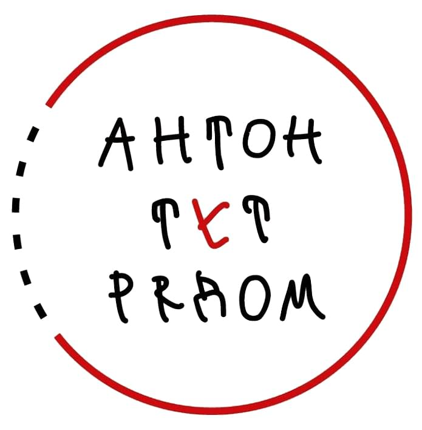
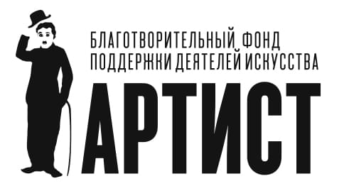
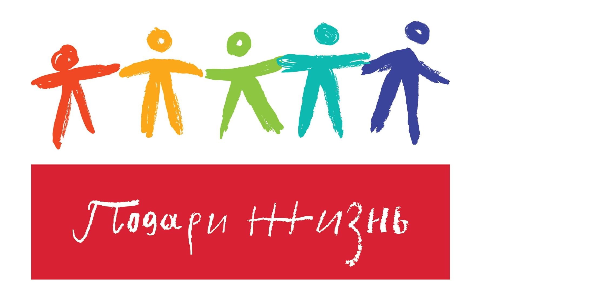
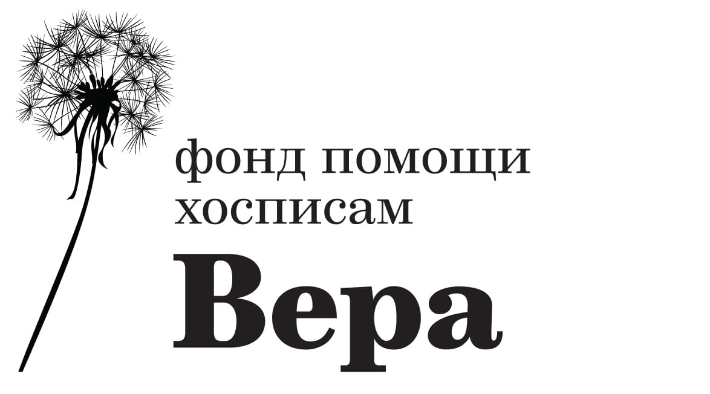
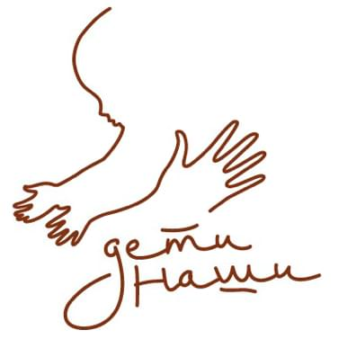

Фонд «Выход в Петербурге» – фонд содействия решению проблем аутизма. Основан в марте 2013 года. Первым
реализованным проектом стал центр «Антон тут рядом», единственный в России центр социальной абилитации,
обучения и творчества для взрослых людей с аутизмом.
Перейти на сайт партнера

Фонд «Артист» учрежден в 2008 году и оказывает материальную помощь и моральную поддержку актерам театра и
кино старшего поколения. Миссия фонда — сделать жизнь так, чтобы пожилые артисты чувствовали себя нужными
и любимыми. Ведь внимание - это главное.
Перейти на сайт партнера

Благотворительный фонд «Подари жизнь» был создан актрисами Диной Корзун и Чулпан Хаматовой в 2006 году.
Основная миссия — лечение и реабилитация детей с онкологическими, гематологическими и иными тяжелыми
заболеваниями.
Перейти на сайт партнера

Фонд «Вера» был создан в 2006 году и назван в честь Веры Миллионщиковой, создателя и главного врача Первого
московского хосписа. Это единственная в России некоммерческая организация, которая системно занимается
поддержкой хосписов и их пациентов.
Перейти на сайт партнера

Благотворительный фонд «Дети наши» помогает детям-сиротам и детям, оставшимся без попечения родителей.
Основное внимание они уделяют физическому, творческому и интеллектуальному развитию ребят и подготовке их ко
взрослой жизни.
Перейти на сайт партнера